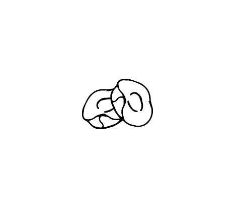

Discription:
They are a variety of pasta typical of Apulia, a region of Southern Italy. Their name comes from their shape, which resembles a small ear. In the vernacular of Taranto they called recchietedde, or chiancaredde. A slightly flatter version is called cencioni, while in the vernacular of Bari strascinate ("dragged") are more similar to cavatelli, without the typical round and concave shape.

-
begginermaster
-
smalllarg
-
shortlong